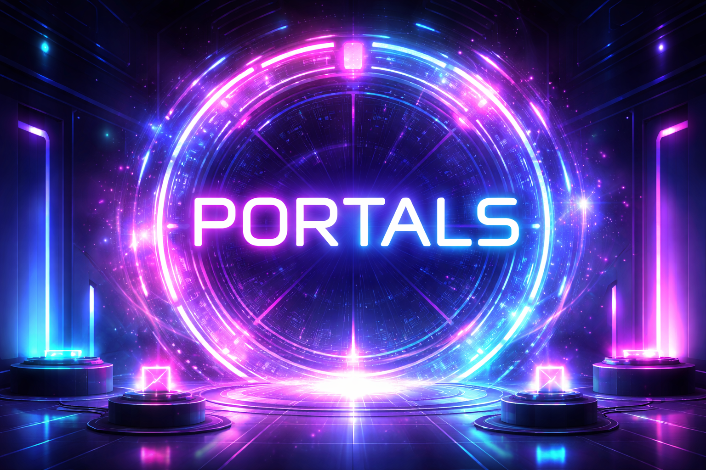
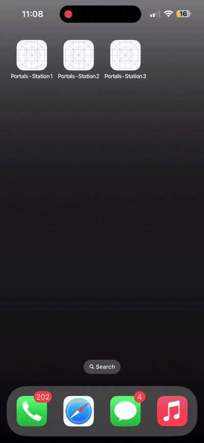
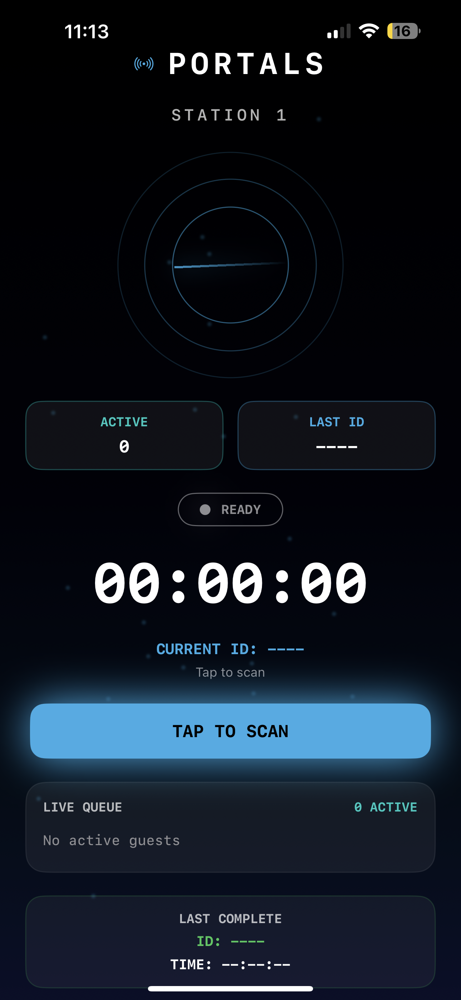
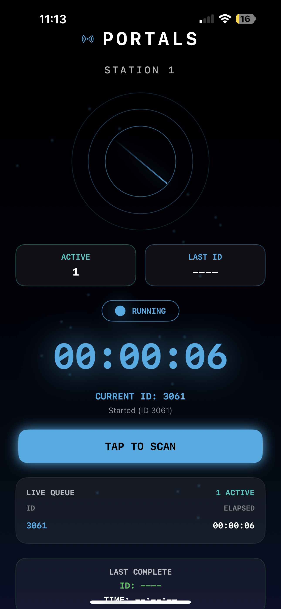
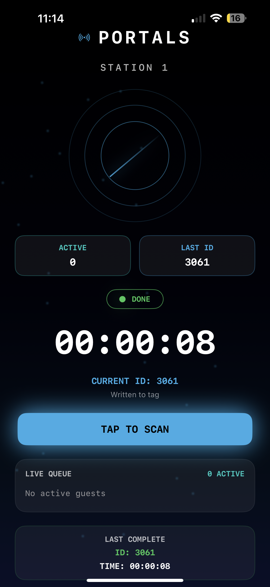
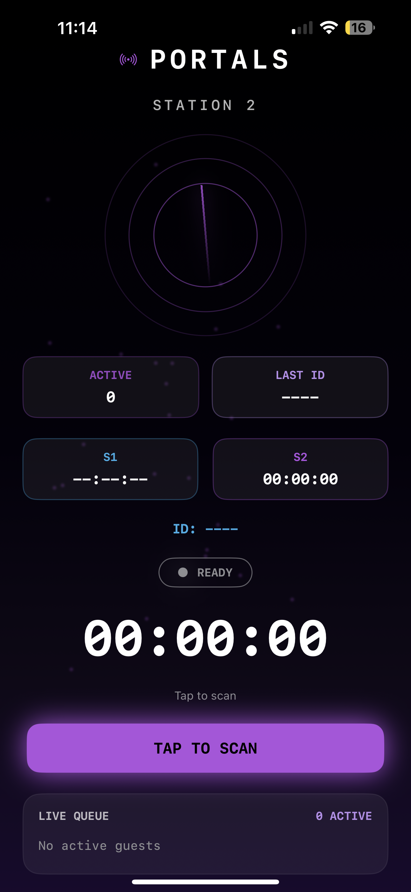
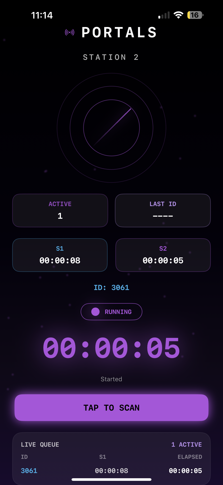
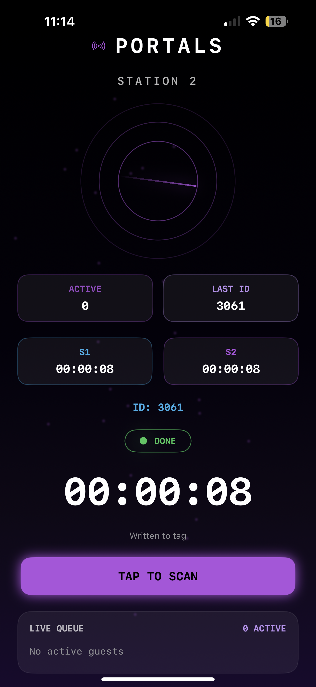
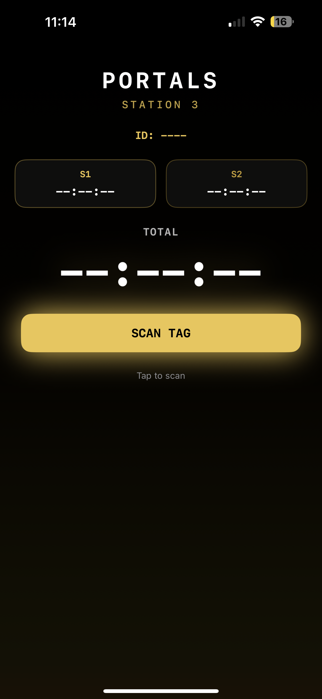
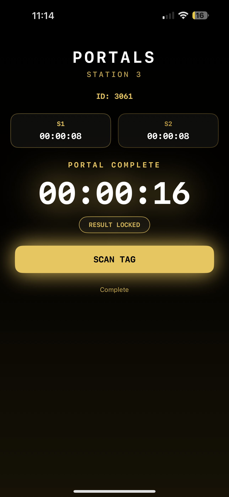

Portals
Interactive Installation · NFC Experience · 2026

Project
Interactive installation
Focus
App building, NFC interaction, and interface design
Deliverable
Multi-station installation system and working UI prototype
Overview
Portals is an interactive installation that uses NFC technology to transform physical movement into a measurable experience. Participants carry a tagged object that acts as their identity, allowing them to move through multiple stations where time, interaction, and progression are recorded in real time.
The system removes the need for personal devices, creating a seamless interaction where a single tap begins and ends each phase of the experience. As users move through the installation, their data is collected and translated into a final result that reflects both individual behavior and collective activity.
Concept
The project explores how physical interaction can be translated into digital data without relying on phones or internet connectivity. By embedding NFC tags into handheld objects, the system creates a seamless interaction where a tap begins or ends an experience. These interactions are then stored and used to build a live reflection of user behavior.
System Demo
This prototype demonstrates how users interact with the system in real time. A single tap begins tracking, and each following interaction updates the system with time, presence, and movement across stations.

Interface
Each station is defined by a distinct visual identity and color system, allowing users to understand where they are within the experience without additional instruction. The interface tracks time, displays active participants, and provides real-time feedback through motion, color, and status indicators.

Idle state before interaction, establishing the station identity and waiting for a user to begin.

The system recognizes presence and prepares the user for the first tap interaction.

The timer activates as the experience begins, turning the station into a live tracked event.

A second station introduces a new visual identity while continuing the same interaction logic.

Live updates communicate participant activity and reinforce the feeling of real-time system feedback.

Accumulated time and interaction data build as the user moves deeper into the installation.

The final interface shifts toward summary, presenting results gathered throughout the experience.

A comparison and ranking view translates participation into a shared outcome across users.
Next Steps
The next phase focuses on refining the physical design of the objects, improving the visual identity of the installation, and developing a smoother real-time feedback system for users.